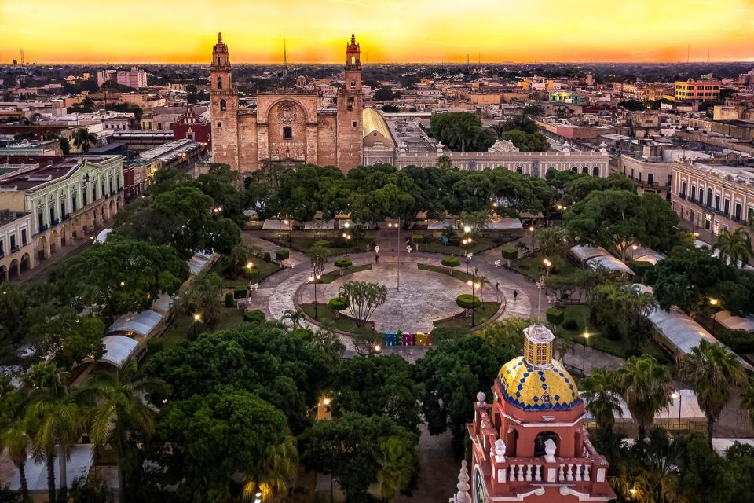
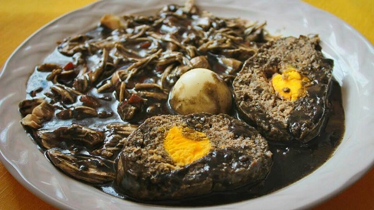

A brief history of Merida
From its Mayan legacy to its commercial expansion.
Merida, city, capital of Yucatán estado (state), southeastern Mexico. It lies near the northwestern tip of the Yucatán Peninsula, about 20 miles (30 km) south of Progreso, its port on the Gulf of Mexico. In 1542 Francisco de Montejo gave the name Mérida to the captured Mayan city T’ho (Tihoo). An early base for Spanish efforts to conquer the Maya, it subsequently became an administrative and commercial centre for the Yucatán region. In the 19th century its economy was based on the processing and export of locally grown henequen, a fibrous plant from which twine and rope are produced. By the early 20th century Mérida became one of Mexico’s most important commercial cities, but the henequen trade declined precipitously after World War II. Many former henequen plantations now grow citrus fruits (notably limes and lemons) and other crops.
Merida, a culinary paradise
My favorite dish of the traditional Yucatecan Cuisine
Relleno Negro (Black Stuffing) is a cuisine dish from Yucatán, México, based on turkey, pork and mixed chili peppers (chilmole). It is traditionally prepared in the month of November in a festival called Hanal Pixán. The original recipe contains turkey, ground pork to make the but (meatball), tomato, chilmole, achiote, black pepper, cloves, cumin, oregano, epazote, garlic and boiled eggs. The black color for the stew comes from the mixture and toast of the chilies that are used in the chilmole, among which we can find: ancho chili, black peppers, cloves, cumin, natural achiote, burnt tortillas, sour orange juice, garlic, oregano and salt.
